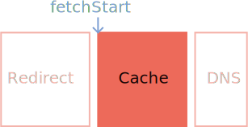

Hello,
I'm Jeremy!
Regarding
Testing methods
Synthetic testing
(or lab data)
Lighthouse
Synthetic Snapshot
The case for:
- Great for testing performance in local dev environments. (With network throttling, of course.)
- Easy to measure the effect of code changes on performance.
The problem:
It doesn't reflect what real users are experiencing.
Enter
Real User Monitoring
(or field data)
What RUM solves:
RUM gathers non-synthetic metrics.
The problem:
It's hard to do.
// Doesn't look _that_ hard, right?
performance.getEntriesByType("navigation");
Gaze upon thy works and despair.
If it is so hard to do,
Then why do it?
Navigation
and
Resource Timing
Navigation timing
Gathers page metrics.
Resource timing
Gathers resource metrics.
Processing Model

w3.org/TR/navigation-timing-2/#processing-model
Unload Phase
When the document unloads.
Unload Phase
RUM Trivia:
startTimeis always0for the current document.startTimeis greater than0for resources.unloadEventStartmay be0if there is no previous document to unload (i.e.,about:blank).
Redirect Phase
When a navigation encounters one (or more) HTTP 300 level status codes.

Redirect Phase

Resource timing API processing model begins here.
Cache Seek Phase
When the browser begins to fetch an item.
Cache Seek Phase
Cached vs. uncached
DNS
When domain lookups occur.
DNS
RUM Trivia:
-
DNS lookups can be cached at multiple levels:
- Browser (
chrome://net-internals#dns). - System.
- Router.
- Beyond.
- Browser (
Connection Phase
When connections are established.
Connection Phase
RUM Trivia:
- Connections can be resumed (i.e.,
Keep-Alive). secureConnectionStartwill be0for non-secure sites or if TLS sessions are resumed.
Request/Response Phase
When requests are made, and when responses begin/end.
Request/Response Phase
*Resource timing API processing model ends here.
Processing Phase
When the DOM is being processed.
Processing Phase
RUM Trivia:
domInteractivemarks when the browser has finished DOM construction.domContentLoadedEventEndmarks when the DOM is ready.domCompletemarks when everything has loaded.
Load Phase
When the page and all of its resources are fully loaded.
Load Phase
The little bits!
name
The URL of a document or resource.
transferSize
The size of a resource including headers.
encodedBodySize
The compressed size of a resource.
(Without headers.)
decodedBodySize
The decompressed size of a resource.
(Again, without headers.)
nextHopProtocol
The protocol used to transmit a resource.
nextHopProtocol values:
h2(HTTP/2)hq(QUIC)http/1.1
Timing recipes!
TTFB (ms)
let ttfb = responseStart - fetchStart; // 35.6001 msHeader size (bytes)
let headerSize = transferSize - encodedBodySize; // 169 bytesDNS lookup time (ms)
let dnsTime = domainLookupEnd - domainLookupStart; // 171.2999 msTCP time (ms)
let tcpTime = connectEnd - connectStart; // 93.5005 msSSL time (ms)
let sslTime = 0;
if (secureConnectionStart > 0) {
sslTime = connectEnd - secureConnectionStart; // 58.6002 ms
}Quick tips!
Don't use
performance.timing
The case against
performance.timing
- Technically obsolete.
- Uses low resolution Unix timestamps.
Don't record
computed metrics
(Unless you know what you're doing.)
Always feature check:
// Check if we can do performance-y things
if ("performance" in window) {
if (performance.getEntriesByType("navigation").length > 0) {
// Do stuff with navigation timing
}
if (performance.getEntriesByType("resource").length > 0) {
// Do stuff with resource timing
}
if (performance.getEntriesByType("paint").length > 0) {
// Do stuff with paint timing
}
}Gather performance metrics with
PerformanceObserver
Using PerformanceObserver
var observer = new PerformanceObserver(list => {
var perfEntries = list.getEntries();
for (let i = 0; i < perfEntries.length; i++) {
// Do stuff with whatever comes in
}
});
observer.observe({
// Add performance entry types you want to observe here:
entryTypes: ["navigation", "resource", "paint", "longtask"]
});